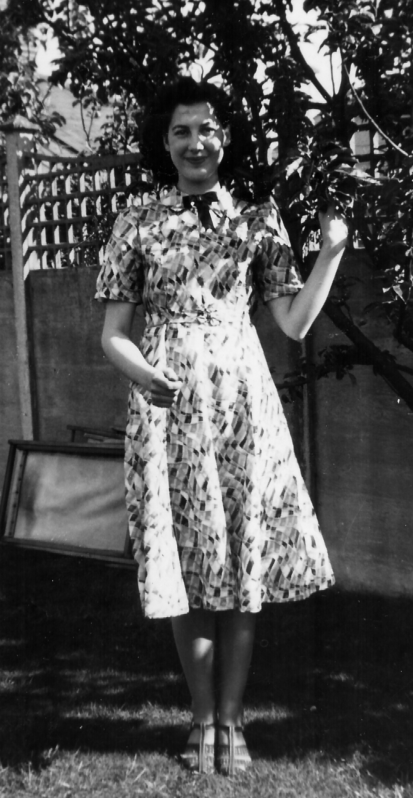
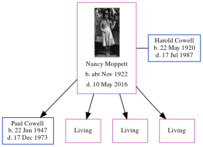

Nancy L Cowell (née Moppett) cNov 1922 - 2016
[ Home ] | [ Calendar ] | [ Surnames Index ] | [ Census Index ] | [ Family History ]Nancy Moppett, the wife of Harold Victor Neville Cowell (the second cousin once-removed on the mother's side of Nigel Horne), was born in Fareham, Hampshire, England c. Nov 19221,2 and married Harold (with whom she had 4 children: Paul Anthony Troward, Lynne F, Susan E and Sally B, along with 3 surviving children) at St Mark's Church, North End, Portsmouth, Hampshire, England on May 26, 19433.
During her life, she was living in Portsmouth in 19435; and at 1 Chandos Road, Newbury, Berkshire, England in 19604.
She died on May 10, 2016 in Newbury1.
Children
- Paul Anthony Troward was born on Jun 22, 1947
Citations
- England & Wales Deaths 2007-2020 - Findmypast
- England & Wales births 1837-2006 - Findmypast
- British Newspaper Marriage Notices - Findmypast
- Electoral Roll
- British Newspaper Marriage Notices - Findmypast
Media
Nancy Moppett

1960 Electoral Register

England & Wales marriages 1837-2008 - BMD/M/1943/2/AZ/000840/107
England & Wales births 1837-2006 - BMD/B/1922/4/AZ/000887/100
England & Wales Deaths 2007-2020 - BMD/D/MILLEN/000938854
Family Tree
Generated by ged2site. Last updated on Jun 11, 2024